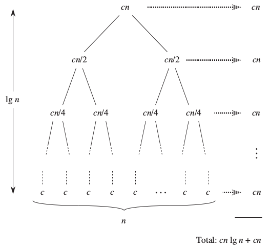
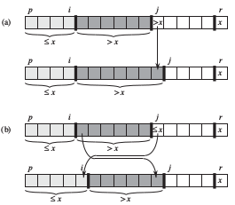
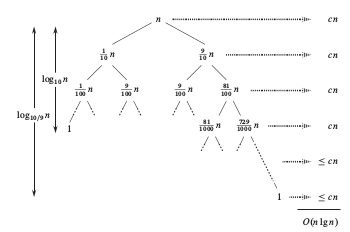

Assignment 1
1 Merge Sort
1.1 Algorithm
# To sort A call MergeSort(A,0,len(A)-1) def MergeSort(A,p,r): if p<r: q=(p+r)/2 MergeSort(A,p,q) MergeSort(A,q+1,r) Merge(A,p,q,r)
# function to merge A[p:q] and A[q+1:r] def Merge(A,p,q,r): n1 = q-p+1 n2 = r-q L = [None]*(n1+1) R = [None]*(n2+1) for i in range(0,n1,1): L[i]=A[p+i] for j in range(0,n2,1): R[j]=A[q+j+1] L[n1] = float("inf") R[n2] = float("inf") i=0 j=0 for k in range(p,r+1,1): if L[i] <= R[j]: A[k]=L[i] i=i+1 else: A[k]=R[j] j=j+1
1.2 Correctness
Defining the following loop invariant:
At the start of each iteration of the for loop of lines 22-28,
- the subarray \(A[p..k-1]\) contains the \(k-p\) smallest elements of \(L[0..n1]\) and \(R[0..n2]\), in sorted order.
- Moreover, \(L[i]\) and \(R[j]\) are the smallest elements of their arrays that have not been copied back into \(A\).
\textbf{Initialization:} 1) \(k=p\), A[p..k-1] is empty: k-p=0 smallest elements.
2)\(i=j=1\), L[1] and R[1] are the smallest elements that have not copied back to A.
\textbf{Induction:} Suppose L[i]≤ R[j], then L[i] is the smallest element not yet copied back in A and line 24 do that.
As subarray A[p..k-1] contained the k-p smallest element initially now it has k-p+1 smallest elements and then k is incremented
to hold the 1st point of loop invariant. i is also incremented which maintain 2nd point of loop invariant. Similarly is L[i]>R[i]
appropriate actions are taken to maintain the loop invariant.
\textbf{Termination:} k=r+1, at this point A[p..r] is sorted and contain r+1-p smallest element of L and R which are of A. So now we have sorted array A.
1.3 Analyzing Merge Sort
There are three steps:
- Divide: O(1)
- Conquer: \(2T(n/2)\), solving two sub-problems of n/2 sizes.
- Combine: O(n), In Merge for loop from lines 22 to 28 runs n times.
which gives
using recursion tree 
thus T(n) = O(n log n).
2 Quick Sort
2.1 Algorithm
# To sort A call (A,0,len(A)-1) def QuickSort(A,p,r): if p<r: q=Partion(A,p,r) QuickSort(A,p,q-1) QuickSort(A,q+1,r)
# function to partion A and place pivot at an appropriate position def Partion(A,p,r): x=A[r] i=p-1 for j in range(p,r): if A[j]<=x: i=i+1 A[i],A[j]=A[j],A[i] A[i+1],A[r] = A[r],A[i+1] return i+1
2.2 Correctness
loop invariant for line 11-15, let k be an index 0 ≤ k ≤ n then
- if p ≤ k ≤ i then A[k] ≤ x
- if i+1 ≤ k ≤ j-1 then A[k] > x
- if k=r then A[k] = x
\textbf{Initialization:} initially i=p-1 and j=p then 1) no values between p and i implies A[k] ≤ x, similarly between i+1 and j-1 no values implies A[k]>x , Also \(A[r]=x\).
\textbf{Induction:} 
a) Figure (a) shows what happens when A[j] > x;the only action in the loop is to increment j . After j is incremented, condition 2
holds for A[j-1] and all other entries remain unchanged.
b) Figure (b) shows what happens when A[j] ≤ x; the loop increments i, swaps A[i] and A[j], and then increments j .
Because of the swap, we now have that A[i] ≤ x, and condition 1 is satisfied. Similarly, we also have that A[j]> x, since the
item that was swapped into A[j-1]is, by the loop invariant, greater than x.
\textbf{Termination:} when j=r and at that point. 1) A[p…i] ≤ x. 2) \(A[i+1...r-1]>x\). 3) A[r]=x.At last we exchange pivot with leftmost element greater then x and move it to its correct position.
2.3 Analyzing Quick Sort
Running time of Partition(A,p,r) = θ (n) as for loop runs for n=r-p+1 times.
1 Worst case partitioning : Sub-problems have 0 and (n-1) size.
whose solution is
\begin{equation} T(n) = \theta ( {n}^2 ) \end{equation}
2 Best Case Partitioning: when both problems have size of n/2 then
whose solution by master theorem is
\begin{equation} T(n) = O (n \log n) \end{equation}
3 Average Case:
if there is some partitioning lets us say in 9/10 and 1/10 then

which gives